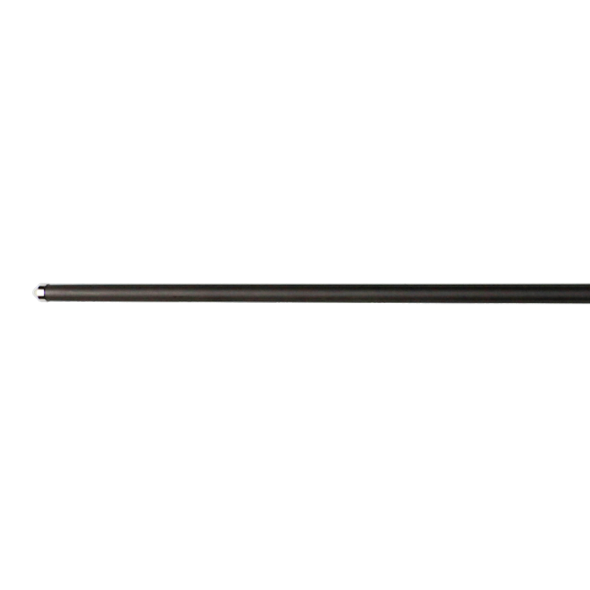
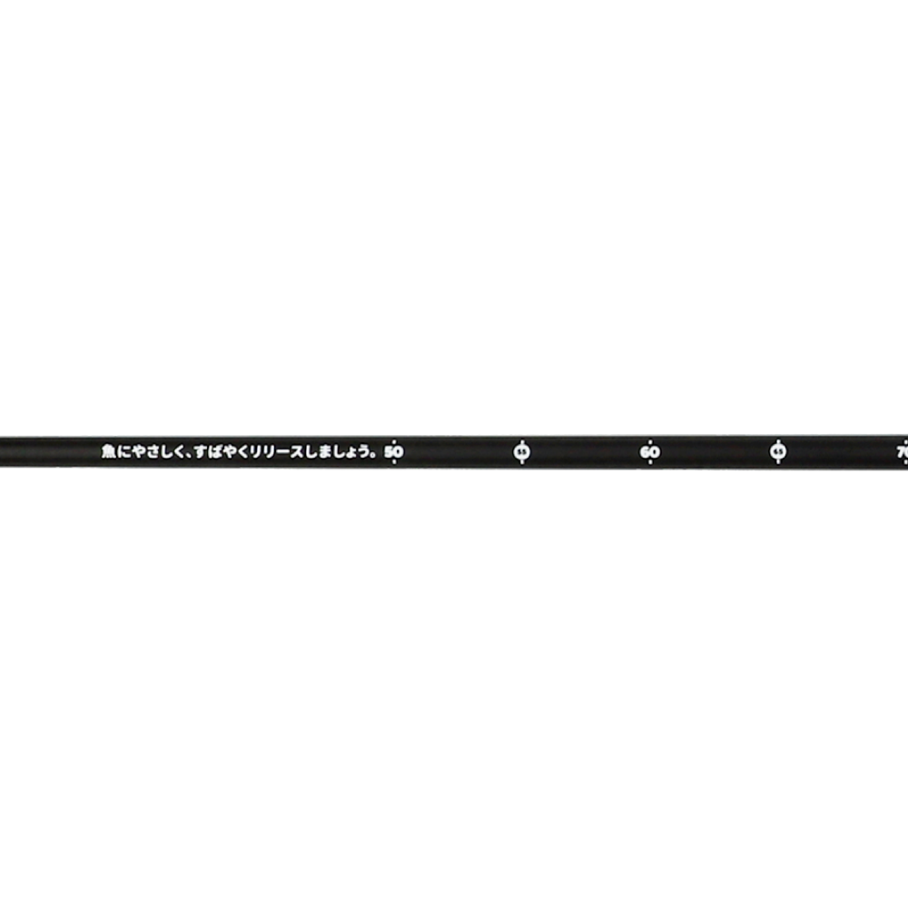
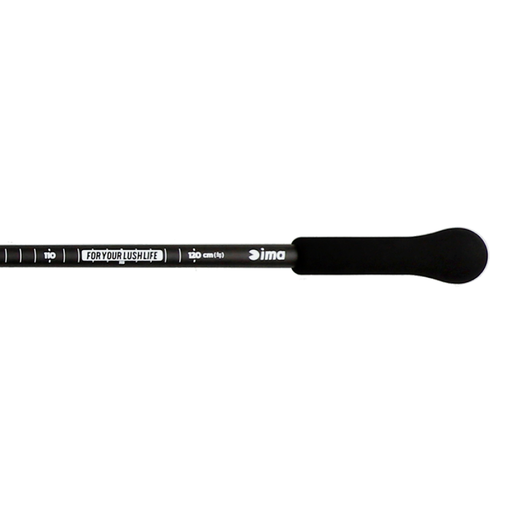

ワンピース イージー ウェーディングスタッフ
（ima ONE PIECE EASY WADING STAFF）
ワンピース イージー ウェーディングスタッフ（ima ONE PIECE EASY WADING STAFF）はima（アイマ）のウェーディングスタッフです。
ウェーディング時の歩行をサポートするスタッフ（杖）で、ワンピース構造のため軽量かつ本体内部が錆びる心配もなく、メンテナンスも簡単。カーボンを採用したスリムなシルエットで水中でも抵抗が少なく、水にも浮きます。簡易計測用の目盛り付きで、釣った魚のサイズもすぐに測れます。

画像出典:ima公式HP
スペック
- メーカー
- ima（アイマ）
- タイプ
- ウェーディングスタッフ（ワンピース）
- 全長
- 140.5cm
- 重量
- 114g
- 素材
- 本体：カーボン／グリップ：EVA／先端パーツ：ステンレス
- カラー
- BLACK
- 価格
- 11,000円（税込）
- 販売
- ima公式オンラインストア限定
▼今すぐチェック
ウェーディングスタッフの特徴
軽くて錆びず、手入れも簡単。ウェーディングの足元を支えるワンピーススタッフ
-
ワンピースで軽量・錆びにくい
継ぎ目のないワンピース構造で、重量はわずか114g。本体内部の発錆の心配がなく、メンテナンスも簡単。
-
カーボンのスリムなシルエットで水の抵抗が少ない
カーボンを採用したスリムなシルエットで、水中でも抵抗が少なく操作性も抜群。万が一手を離しても水に浮く。
-
EVAグリップと簡易計測用の目盛り
フィット感のあるEVAグリップが安定感・安心感につながる。本体には簡易計測用の目盛りが付いていて、釣った魚のサイズをすぐに測れる。
ウェーディングスタッフの使い方
ウェーディング中は、一歩踏み出す前にスタッフで前方の水深や底の状態を探り、深みや沈み根、ぬかるみを確かめてから進むのが基本です。
魚が釣れたら、本体の目盛りでサイズを測ってすばやくリリースできます。釣行後は真水で洗って塩分を落とし、よく乾かしてから保管しましょう。
ウェーディングスタッフのがおすすめの人
干潟や河口、サーフなどでウェーディングする人に向いたアイテムです。
足元が見えにくい濁りやナイトのウェーディングで、安全を確保しながら移動したい人や、軽くて手入れが簡単なスタッフを探している人にオススメです。
ワンポイント
ワンピース構造のため、全長140.5cmのまま持ち運ぶことになります。車への積み込みや移動の際は長さに注意しましょう。
ima公式オンラインストア限定販売で、他の商品とあわせての注文はできません。購入前に公式サイトの注意事項を確認しておきましょう。
ウェーディングスタッフの主な仕様
| 項目 | 仕様 | ポイント |
|---|---|---|
| 構造 | ワンピース | 軽量で本体内部が錆びにくい |
| 全長／重量 | 140.5cm／114g | 軽くて持ち歩きやすい |
| 素材 | カーボン／EVA／ステンレス | スリムで水中の抵抗が少ない |
| 機能 | 水に浮く・目盛り付き | 手を離しても浮く。魚のサイズを簡易計測できる |
仕様は公式サイトの記載によるものです。最新の在庫は公式オンラインストアで確認してください。
ディテール
ウェーディングスタッフのディテールを紹介します。

先端パーツステンレス製の先端パーツ。

目盛り簡易計測用の目盛り付きで、釣った魚のサイズをすぐに測れる。

EVAグリップフィット感のあるEVAグリップで、安定感・安心感を高める。
画像出典:ima公式HP
ウェーディングスタッフとあわせてチェックしたいアイテム
-
 フローティングベスト X-0III
ima
詳細はこちら＞
フローティングベスト X-0III
ima
詳細はこちら＞
imaのX型フローティングベスト。浮力7.5kg/24h。ウェーディングの装備とあわせて。
-
 タイタニュームフィットグローブ
ima
詳細はこちら＞
タイタニュームフィットグローブ
ima
詳細はこちら＞
imaの防寒フィッシンググローブ。冬のウェーディングで手を守りたいときに。
-
 ガネット Ver.2
アピア
詳細はこちら＞
ガネット Ver.2
アピア
詳細はこちら＞
アピアのフローティングベスト。ウェーディングや磯で使いやすい軽量モデル。